ConnChecker：基于图方法的 Formal Connectivity Check 自动化根因分析
Formal connectivity check 在 SoC 级信号连接验证中复杂度可控，但检查失败后 counterexample 的调试仍高度依赖人工，约占工程师 47% 的 debug 时间，且此前缺乏公开的加速方案。Infineon 团队提出 ConnChecker，将 DUT 建模为有向依赖图，解析 JasperGold 输出的 structural/functional dependency graph 与 CEX 报告，先自动将失败归为三类，再路由到三条针对性分析流程：段级分解加逐边原子断言与 reverse connectivity check 定位失效边、fan-in 图识别 root driver 候选断点、divide-and-conquer 结合 over-constraint 分析处理仅结构连接场景。在 Infineon 60GHz RADAR SENSOR 与 AURIX 车规 MCU 两款量产芯片上评估，平均调试时间缩短约 4 倍，复杂场景最高节省 80%，且运行时间随连接复杂度增长近乎恒定。该工作对团队的形式验证 debug 自动化能力建设有直接参考价值。
Formal connectivity check（基于 Cadence JasperGold Connectivity App 等工具）能以可控复杂度验证 SoC 中的信号路径连接，但检查失败时生成的 counterexample 调试仍是人工、耗时且易错的过程，是 formal 与仿真功能验证中最耗时的任务之一（据 2024 Wilson Research Group 报告，工程师约 47% 的时间用于 debug）；据作者所知，此前没有公开的解决方案专注于加速该调试过程。
将 DUT 建模为有向依赖图 G=(V,E)，节点为信号/pin/变量，边为依赖或结构连接，各 IP 层级图逐级合并为子系统级与系统级图。基于 JasperGold 生成的 functional/structural dependency graph 与 CEX 报告，先用轻量决策流自动将每个失败归类为三类（功能+结构路径均存在、无结构路径、仅结构路径），再分别进入三条 Analysis Flow：Flow 1 对路径做段级分解，为依赖图每条边生成原子断言并重新用 JasperGold 验证，结合段级 reverse connectivity check（深度恒为 1，便于全自动化）精确定位失效边；Flow 2 构建 fan-in 图，过滤时钟/复位/顶层输入等无关信号，识别 root driver 作为断点候选并复用原连接条件生成 connectivity map；Flow 3 对结构路径做 divide-and-conquer，并借助 JasperGold 的 over-constraint 分析定位功能断连根因。工具以 Python 实现，处理工具标准输出，支持 single mode 与 multi mode（本次仅评估 single mode）。
在 Infineon 60GHz RADAR SENSOR 与 AURIX 车规 MCU 两款量产级流片设计上评估，调试时间平均缩短约 4 倍，最高节省 80%
Analysis Flow 1：加速比 2× 至 5× 以上；最复杂案例（mixed-signal、multi-clock domain，Case 12）分析时间从近 30 分钟降至约 5 分钟
Analysis Flow 2：加速比 2× 至 5×；复杂 MCU 案例人工分析常超 25 分钟，ConnChecker 在 8 分钟内完成
Analysis Flow 3：5-10 条边的 sensor 连接约节省 60% 时间，40-50 条边的 MCU 路径最高节省 80%；少于 5 条边的简单数字连接人工调试与工具相当甚至更快
三条流程的运行时间随连接复杂度增加几乎保持恒定，显示良好可扩展性；评估中每条连接的候选路径数 consistently 少于 5 条
据作者所知，此前没有公开工作专注于加速 formal connectivity check 的调试过程；ConnChecker 首次将 JasperGold 输出的依赖图与 CEX 报告转化为结构化的图分析工作流，实现失败自动分类与三条针对性 RCA 流程，并以段级（深度恒为 1）reverse connectivity check 替代全路径检查，规避了路径深度因设计而异导致的自动化难题。
相关度级别：high
命中能力域：2.5 形式验证与等效性检查 | 2.4 设计验证方法学 | 2.7 EDA/验证自动化与 AI 辅助
理由：论文直接命中三个能力域：2.5（formal connectivity check 是形式属性检查在 SoC 集成验证中的典型应用，与团队的 CDC/RDC 形式化检查、协议合规形式化建模同属形式验证技术栈）；2.4（核心贡献正是 bug triage 与 debug 方法学：失败自动分类、根因定位、段级报告）；2.7（Python 实现的验证流程自动化框架，处理工具标准输出，可复用）。团队交付 LPDDR/HBM4/UCIe 等 IP 时，IP 集成到 SoC 后的连接性检查与 CEX 调试是高频工程场景，该工作提供了可直接借鉴的自动化方法与量化收益证据。
建议动作：深入精读并做内部分享
Do Ngoc Tiep 1 , Nguyen Linh Anh 2 , Luu Danh Minh 1 1 英飞凌科技越南有限公司，越南河内 2 康奈尔大学，美国纽约州伊萨卡
致我们的职能经理，您始终支持我们，并对我们的工作寄予坚定不移的信任。
形式化连接性检查为复杂片上系统（SoC）设计中的信号路径提供了可扩展的验证能力，但对反例的调试仍然是一个手动且耗时的过程。ConnChecker 引入了一种全新的基于图的视角，通过整合形式化工具的输出（如结构/功能依赖图和反例报告）来实现根因分析的自动化。该方法首先进行自动故障分类，将每个反例路由到三种针对性分析流程之一。这些流程能够定位故障点，并提出纠正措施或供人工检查的提示。在两款工业级 SoC 上的评估表明，ConnChecker 将调试时间最多缩短了 80%，尤其是在复杂案例中，展示了其在多样化连接性场景下的可扩展性与有效性。
形式化连接性检查、依赖图、根因分析
虽然形式化验证能够为硬件正确性提供高度的可信度，但其在片上系统（SoC）层面的可扩展性往往受到状态空间爆炸的制约。一个显著的例外是连接性检查，它以可处理的复杂度验证信号路径与互连关系。标准流程包括根据设计规范构建连接性图，并使用形式化工具（例如 Cadence JasperGold Connectivity App [1]）进行验证。当失败发生时，会生成反例（counterexample，CEX），需要人工进行易出错的调试。这一过程是形式化功能验证与基于仿真的功能验证中最耗时的任务之一。根据 2024 年 Wilson Research Group IC/ASIC 功能验证趋势报告 [2]，工程师大约将 47% 的时间用于调试。随着设计复杂度的不断提高，迫切需要高效的调试方法。尽管已有先前工作对形式化连接性检查进行了探索 [3, 4]，但据我们所知，目前尚无公开可用的解决方案专注于加速调试过程。
为填补这一空白，我们提出了 ConnChecker——一个基于图的框架，旨在加速形式化连接性验证中的根因分析（root-cause analysis，RCA）。ConnChecker 对 CEX 报告以及由 JasperGold 生成的功能与结构依赖图进行处理，对失败类型进行分类，并应用有针对性的分析流程。这些流程有助于识别根因、提出潜在的修复建议，或缩小人工检查的搜索空间，从而显著减少调试工作量。
ConnChecker 通过三项关键创新减少了人工工作量并增强了诊断能力：
我们在两款商用 SoC 设计上对 ConnChecker 进行了评估，分别为一款雷达传感器 [5] 和一款汽车微控制器 [6]，以验证其可行性和有效性。在三种不同的分析流程中，与人工方法相比，ConnChecker 均持续缩短了调试时间。对于简单连接，两者性能相当。然而，随着复杂度的提升，ConnChecker 实现了高达 80% 的时间节省。这些结果证明了 ConnChecker 在加速形式化连接性调试方面具有强大的可扩展性和实用价值。
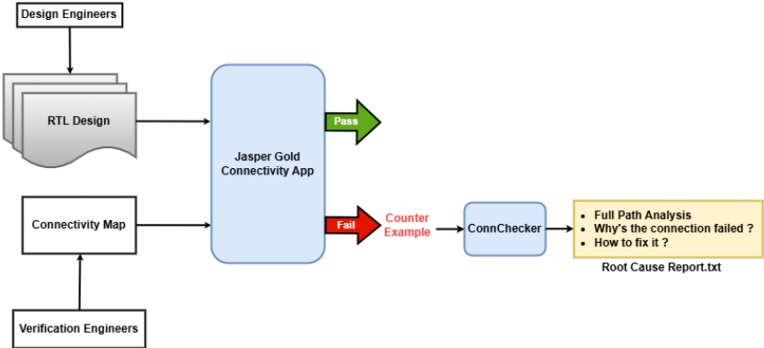
被测设计（DUT）被建模为一个有向依赖图 G = ( V, E )，其中每个节点（形式上称为顶点）v ∈ V 表示一个信号、引脚或变量，而每条边 e = ( v i , v j ) ∈ E 表示节点之间的直接依赖关系或结构连接。来自各个 IP 模块的层次化图被合并以构成子系统级图，并最终形成代表整个片上系统（SoC）的系统级图。
给定源节点 v s ∈ V 和目标节点 v d ∈ V，连接性检查断言存在一条有效路径 P = { v s , v 1 , . . . , v d } ⊆ G，使得信号从 v s 到 v d 的传播在该设计的结构与功能约束下是可行的。
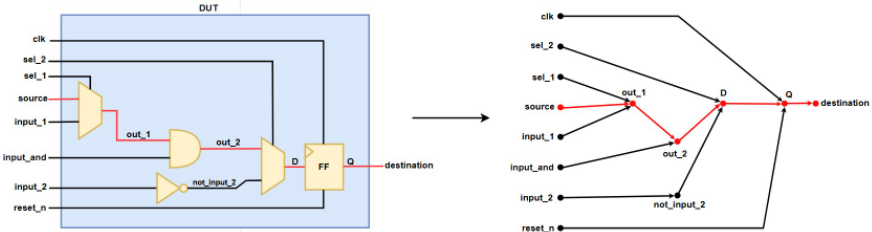
JasperGold Connectivity App 定义了两种类型的连接：结构连接与功能连接 [1]。结构连接是指两个信号之间由寄存器传输级（RTL）定义的路径，该路径在影响锥（cone of influence）中可见，而不论信号传播是否可能。功能连接是结构连接的一个子集，即在考虑设计约束与门控逻辑的情况下，驱动信号能够在逻辑上影响接收信号的连接。这些定义构成了将连接性失效划分为三个不同类别的基础：
我们的目标是开发一种精简的解决方案，能够快速对每个失效进行分类并触发相应的分析流程，从而实现高效的根因分析并减少调试工作量。
在本节中，我们将基于我们的目标，描述用于增强 JasperGold Connectivity App 的两阶段解决方案。
第一阶段是一个自动化的故障分类流程，用于将每个反例（CEX）映射到其对应的故障类型。基于上一节中预定义的故障类别，我们实现了一个轻量而有效的决策流程，如图 3 所示。ConnChecker 从 CEX 出发，调用 JasperGold 生成从源端到目的端的功能路径。如果找到有效的功能路径，该故障将被路由到分析流程 1（Analysis Flow 1）。否则，ConnChecker 会检查是否存在结构路径，以确定该故障应被分配到针对仅存在结构连接情况的分析流程 3（Analysis Flow 3），还是针对无结构连接情况的分析流程 2（Analysis Flow 2）。
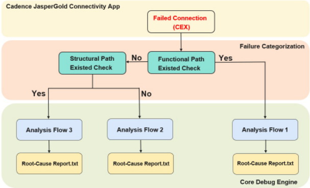
一旦确定了正确的类别，反例（CEX）便会被导入核心调试引擎内的三个分析流程之一：1) 分析流程 1——功能连接与结构连接均存在：该流程如图 4 所示，针对预期存在功能路径、但连通性检查因连通性映射图错误、寄存器传输级（RTL）缺陷或约束缺失等问题而失败的情况。分析引擎检查由 JasperGold 生成的功能依赖图，并将其分解为更小的段以便进行详细检查。此外，ConnChecker 从 CEX 报告中提取连接名称与条件。对于每个段，ConnChecker 将该段与其提取的数据相结合，构建精细化的段级连通性映射图，并用 JasperGold 重新验证，以识别失效的段。实质上，ConnChecker 为依赖图的每条边生成原子断言，以确认功能连接。这使得能够沿完整路径精确定位断开的边。
为进一步增强分析，JasperGold 的反向连通性检查被应用于失效的段。该技术使用形式化方法直接从 RTL 中提取连接，使用户能够对这些连接进行验证，或将其与规格说明进行比较。ConnCheck 将结果汇编成一份统一报告，概述完整路径结构、精确定位失效原因并推荐纠正措施。虽然对整条路径应用反向检查看似理想，但实际限制使得段级分析更为有效。首先，对路径进行分段提供了更细的粒度，能够更深入地洞察每个组件到组件之间的连接。其次，对每个段应用反向连通性检查可以呈现清晰的图景，使工程师能够了解每个段所需的确切条件。第三，对完整路径进行反向连通性检查的运行时间远长于仅对失效段进行检查的运行时间，使段级分析在实践中更加高效。最重要的是，反向连通性检查依赖路径深度作为输入，而路径深度因设计而异，从而使自动化变得复杂。相比之下，段级检查的深度始终为 1，这使我们能够创建更简单、完全自动化的流程，满足各种设计的需求。
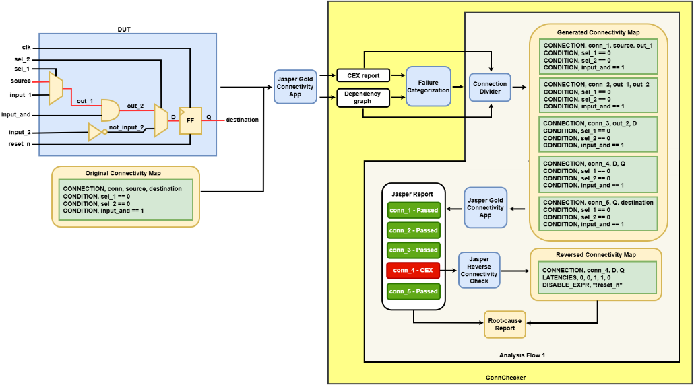
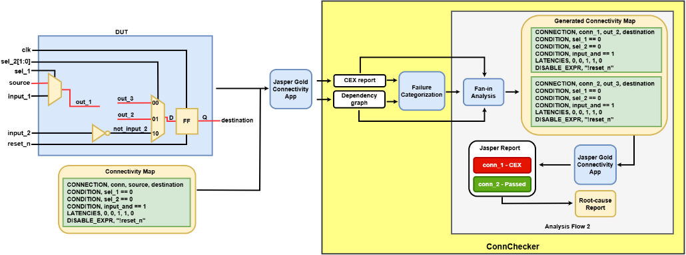
扇入图（fan-in graph）与完整的结构依赖图不同，它仅关注影响目的端的信号，而不是捕获整个连接。JasperGold 会显示直接或间接影响目的端信号的所有信号。ConnChecker 对此进行了增强，指示 JasperGold 过滤掉无关信号，例如时钟、复位和顶层输入。随后，在构建扇入图之前，它会识别根驱动（root drivers），即未被任何其他信号驱动、可能指示潜在断点的信号。利用这一精炼后的输出，ConnChecker 生成一个连接映射（connectivity map），用于追踪从根驱动到目的端的路径。该映射复用了原始的连接条件，因此如果某个根驱动的连接检查通过，则表明该驱动可能就是断点。ConnChecker 会将所有识别出的根驱动报告给工程师，提供一组清晰简洁的候选对象以供进一步调试。通过将针对性的洞察与自动化分析相结合，ConnChecker 简化了调试流程并提供可操作的结果，相较于人工检查原始工具输出有显著改进。
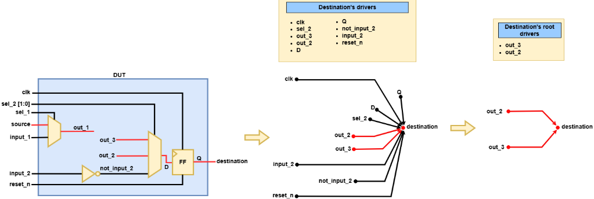
以图 6 中的示例为例。JasperGold 生成目的端的驱动列表：
在排除时钟、复位、选择和顶层输入信号后，仅剩 out_2 和 out_3 是未被任何其他信号驱动的驱动。我们将这些信号称为目的端的根驱动。
3) 分析流程 3 - 仅存在结构连接：该流程针对存在结构路径但未观察到功能传播的场景，这通常是由过度约束、RTL 逻辑问题或形式验证环境不完整所导致。ConnChecker 采用与分析流程 1 类似的分治策略来处理结构依赖路径。虽然反向连接检查不适用于过度约束的片段，但 JasperGold 提供了诸如过度约束分析 [1] 等替代技术，ConnChecker 借助这些技术能够有效定位并解释功能断连的根本原因。
为了支持多种调试场景，ConnChecker 提供了两种运行模式：single mode（单模式），专为分析单个失效而设计；以及 multi mode（多模式），支持并发处理多个失效，从而实现可扩展的高吞吐量调试。在本工作中，我们重点评估 single mode 的有效性，以突出 ConnChecker 的核心能力。
我们在两款商用 SoC 设计上对 ConnChecker 进行了评估：一款是来自 Infineon 60GHz RADAR SENSOR 系列的雷达传感器 [5]，另一款是来自 Infineon AURIX MCU 系列的汽车微控制器 [6]。该雷达传感器规模中等，集成了计算与控制子系统，并带有用于配置、数据搬运和可测试性设计（DFT）的标准外设接口。其连接跨越多个层级，包含数千条顶层及子系统内部连接，涵盖总线、点对点信号以及 pad/IO 布线。该微控制器具备相同的特征，但规模显著更大，拥有更多模块、更深的层次结构以及更广的外设覆盖范围。两款设计均为已流片的量产级芯片，选择它们是为了覆盖广泛的连接性场景，并验证 ConnChecker 在真实工业环境中的适用性。
为了评估该工具的有效性，我们将 ConnChecker 的三种 Analysis Flow（分析流程）应用于从两款设计中精选的一组单失效用例。每个用例的复杂度各不相同，其复杂度由图边的数量以及连接路径的性质决定，例如组合逻辑、时序逻辑、混合信号或多时钟域。这一设置使我们能够对基于图的方法及其处理不同连接特性的能力进行结构化评估。此外，我们还按照图 7 所示的流程，将人工调试所需的时间与经 ConnChecker 加速后的时间进行了比较。该比较为生产力提升提供了量化度量，并展示了自动化在缩短调试周转时间方面的实际效益。详细结果将在下一节中给出。
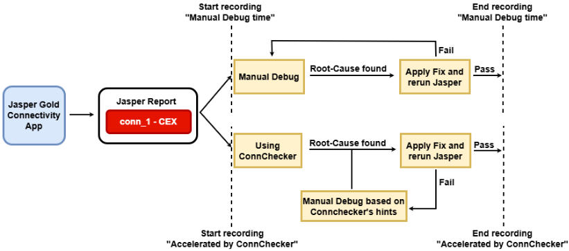
表 I 和图 8 展示了在分析流程 1 下各案例中人工调试与 ConnChecker 的运行时间对比。ConnChecker 在调试时间上实现了一致的缩减，加速比根据连接复杂度的不同介于 2 倍到 5 倍以上。在涉及混合信号和多时钟域的高复杂度案例（例如 Case 12）中，ConnChecker 将分析时间从近 30 分钟缩短至约 5 分钟。这一改进得益于自动化的分段级分解、有针对性的断言生成，以及与反向连接性检查的集成。
| Connection | Design type | Connection's characteristic | No. of connection's edges | Manual debug time (HH:MM:SS) | Accelerated by ConnChecker (HH:MM:SS) |
|---|---|---|---|---|---|
| 1 | Radar Sensor | Combinational | 7 | 00:02:39 | 00:01:15 |
| 2 | Radar Sensor | Combinational | 6 | 00:01:33 | 00:01:20 |
| 3 | Radar Sensor | Combinational/Mixed-signal | 8 | 00:10:02 | 00:03:01 |
| 4 | Radar Sensor | Combinational/Mixed-signal | 16 | 00:12:15 | 00:03:40 |
| 5 | Radar Sensor | Combinational/Mixed-signal | 16 | 00:11:40 | 00:03:45 |
| 6 | Radar Sensor | Combinational/Mixed-signal | 17 | 00:10:34 | 00:02:59 |
| 7 | ATV Microcontroller | Combinational/Mixed-signal | 41 | 00:22:20 | 00:05:23 |
| 8 | ATV Microcontroller | Combinational/Mixed-signal | 40 | 00:20:34 | 00:05:01 |
| 9 | ATV Microcontroller | Combinational/Mixed-signal | 41 | 00:22:53 | 00:05:59 |
| 10 | ATV Microcontroller | Combinational/Sequential/Mixed-signal | 45 | 00:25:34 | 00:05:32 |
| 11 | ATV Microcontroller | Combinational/Sequential/Mixed-signal/Multi-clock domain | 47 | 00:28:26 | 00:05:29 |
| 12 | ATV Microcontroller | Combinational/Sequential/Mixed-signal/Multi-clock domain | 47 | 00:29:44 | 00:05:20 |
| Connection | Design type | Connection's characteristic | No. of connection's edges | Manual debug time (HH:MM:SS) | Accelerated by ConnChecker (HH:MM:SS) |
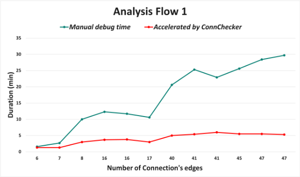
表 II 和图 9 展示了 ConnChecker 在分析流程 2 中的性能表现。与分析流程 1 类似，ConnChecker 在所有案例中都显著缩短了调试时间，加速比介于 2 倍到 5 倍之间。在复杂的微控制器示例中，人工分析往往超过 25 分钟，而 ConnChecker 在 8 分钟以内即可完成该任务。这种高效源于其对依赖图的自动遍历与过滤，无需进行穷尽式的人工检查即可缩小根因候选范围。
| Connection | Design type | Connection's characteristic | No. of connection's edges | Manual debug time (HH:MM:SS) | Accelerated by ConnChecker (HH:MM:SS) |
|---|---|---|---|---|---|
| 1 | Radar Sensor | Combinational | 7 | 00:01:40 | 00:01:00 |
| 2 | Radar Sensor | Combinational | 6 | 00:01:33 | 00:01:10 |
| 3 | Radar Sensor | Combinational/Mixed-signal | 8 | 00:15:23 | 00:03:50 |
| 4 | Radar Sensor | Combinational/Mixed-signal | 16 | 00:17:15 | 00:03:42 |
| 5 | Radar Sensor | Combinational/Mixed-signal | 16 | 00:13:32 | 00:03:51 |
| 6 | Radar Sensor | Combinational/Mixed-signal | 17 | 00:17:26 | 00:03:46 |
| 7 | ATV Microcontroller | Combinational/Mixed-signal | 41 | 00:30:24 | 00:08:12 |
| 8 | ATV Microcontroller | Combinational/Mixed-signal | 40 | 00:28:12 | 00:07:16 |
| 9 | ATV Microcontroller | Combinational/Mixed-signal | 41 | 00:25:16 | 00:07:46 |
| 10 | ATV Microcontroller | Combinational/Sequential/Mixed-signal | 45 | 00:22:14 | 00:06:32 |
| 11 | ATV Microcontroller | Combinational/Sequential/Mixed-signal/Multi-clock domain | 47 | 00:25:45 | 00:07:35 |
| 12 | ATV Microcontroller | Combinational/Sequential/Mixed-signal/Multi-clock domain | 47 | 00:23:40 | 00:06:52 |
| Connection | Design type | Connection's characteristic | No. of connection's edges | Manual debug time (HH:MM:SS) | Accelerated by ConnChecker (HH:MM:SS) |
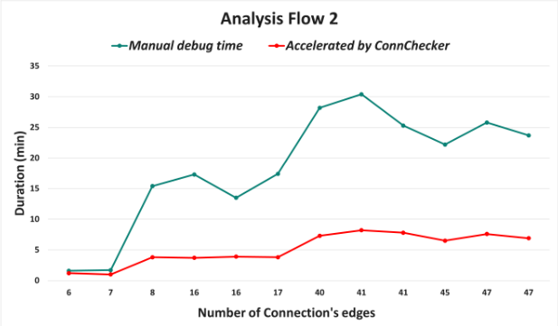
表 III 和图 10 展示了分析流程 3 的结果。这一场景在雷达传感器设计中并不常见，但在汽车微控制器中却经常出现，而后者的约束复杂度显著更高。对于边数少于五条的简单数字连接，由于原理图追踪较为容易，人工调试几乎同样快，有时甚至更快。然而，随着连接复杂度的增加，ConnChecker 展现出明显优势：对于边数为 5-10 条的传感器连接，可节省约 60% 的时间；对于边数为 40-50 条的微控制器路径，节省时间最高可达 80%。
| Connection | Design type | Connection's characteristic | No. of connection's edges | Manual debug time (HH:MM:SS) | Accelerated by ConnChecker (HH:MM:SS) |
|---|---|---|---|---|---|
| 1 | Radar Sensor | Combinational | 7 | 00:02:12 | 00:02:30 |
| 2 | Radar Sensor | Combinational | 6 | 00:02:24 | 00:02:18 |
| 3 | Radar Sensor | Combinational/Mixed-signal | 8 | 00:02:20 | 00:02:28 |
| 4 | Radar Sensor | Combinational/Mixed-signal | 16 | 00:12:17 | 00:03:32 |
| 5 | Radar Sensor | Combinational/Mixed-signal | 16 | 00:13:16 | 00:03:56 |
| 6 | Radar Sensor | Combinational/Mixed-signal | 17 | 00:12:27 | 00:03:54 |
| 7 | ATV Microcontroller | Combinational/Mixed-signal | 41 | 00:19:47 | 00:05:32 |
| 8 | ATV Microcontroller | Combinational/Mixed-signal | 40 | 00:20:01 | 00:05:26 |
| 9 | ATV Microcontroller | Combinational/Mixed-signal | 41 | 00:23:56 | 00:05:16 |
| 10 | ATV Microcontroller | Combinational/Sequential/Mixed-signal | 45 | 00:25:23 | 00:05:18 |
| 11 | ATV Microcontroller | Combinational/Sequential/Mixed-signal/Multi-clock domain | 47 | 00:26:14 | 00:05:59 |
| 12 | ATV Microcontroller | Combinational/Sequential/Mixed-signal/Multi-clock domain | 47 | 00:26:34 | 00:05:53 |
| Connection | Design type | Connection's characteristic | No. of connection's edges | Manual debug time (HH:MM:SS) | Accelerated by ConnChecker (HH:MM:SS) |
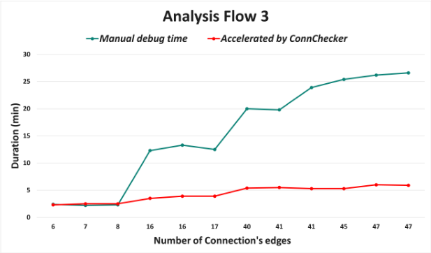
总体而言，该基于图的框架已在两个工业设计上得到验证，其中包括英飞凌（Infineon）最大的微控制器芯片之一，证实了其对大规模系统的适用性。尽管实验仅限于所观察到的复杂度范围，但三个图中的性能趋势（红线）表明，随着连接复杂度的增加，运行时间几乎保持恒定。这展示了强大的可扩展性，并表明该方法可扩展至多种设计类型。
根据我们的实验评估，我们确定了导致手动调试时间显著增加的三个主要因素：混合信号连接、多时钟域跨越以及单一路径上的多个故障点。在本节中，我们将介绍 ConnChecker 基于图的工作流程如何有效应对上述每一项挑战。
1) 混合信号连接：混合信号连接是导致手动调试时间大幅增加的关键因素。在传统的数字连接调试工作流程中，工程师通常无需深入了解被测设计（DUT）即可开展工作，因为通常只存在一条明确定义的源到目标路径。波形查看器和原理图查看器等标准工具通常足以追踪故障并确定根本原因。然而，混合信号连接引入了显著的复杂性。如图 11 所示，多驱动网络和反馈环路可能导致存在多条潜在的源到目标路径，若不具备深入的 DUT 专业知识，则难以确定正确的路径。即使在确定了正确路径之后，工程师仍需追踪故障点、理解使能条件并实施修复。这些活动会进一步增加工作量和时间。ConnChecker 有助于使这一过程更易于管理。当无法预先确定正确路径时，它会将自身的 Analysis Flow 应用于所有候选路径，并将结果呈现给工程师以供进一步检查。这些洞见使工程师能够评估每条连接的特性，并高效地确定正确的路径。这种方法可能并不详尽，仍可能需要人工分析，尤其是在大量候选路径可能导致状态空间爆炸并增加形式化工具运行时间的边界情况下；但对两个工业设计的评估发现，每条连接的候选路径数量始终少于五条。总体而言，尽管存在一些局限性，ConnChecker 仍然提供了一种结构化的方法，可提高可追溯性并支持更高效的调试。
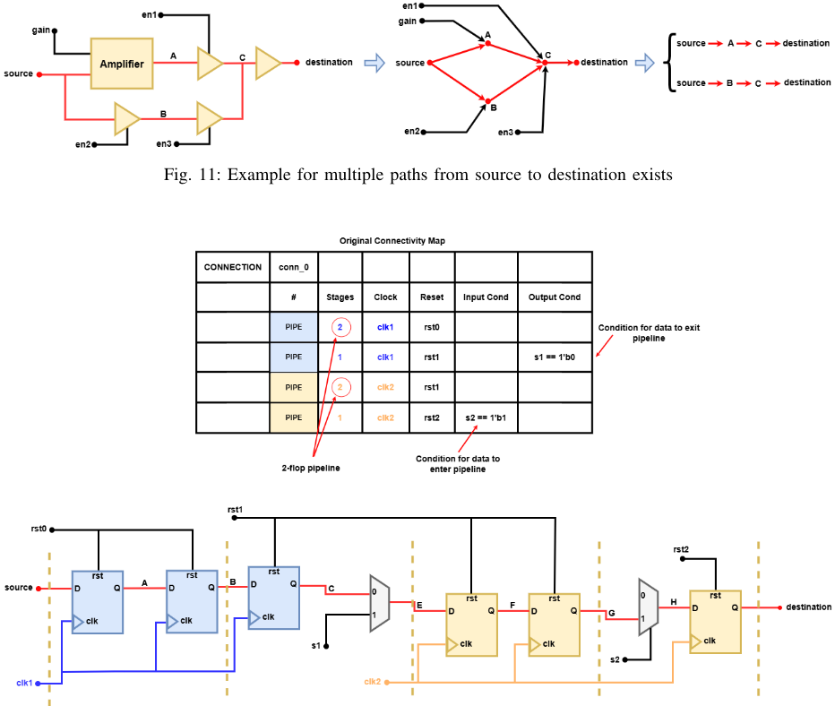
在上述各种场景中，基于图的框架表示结合分段级报告，可帮助工程师聚焦于正确的路径、尽早暴露所有失效的分段，并减少迭代返工，从而缩短调试时间并提高可追溯性。尽管包含大量候选路径的极端情况仍可能给 ConnChecker 带来压力，但该方法始终能够简化分析流程，并将专家精力集中到最能创造价值的地方。
尽管我们基于图的方法具有显著优势，但它仍面临某些局限性。一个显著的挑战出现在源节点与目的节点之间存在多条功能路径或结构路径的情形，正如前文在混合信号连接的语境中所讨论的那样。自动识别用于分析的正确路径仍是一个未解决的问题，通常需要设计者的输入。目前，最实用的解决方案是为工程师提供全面的信息，以加速这一决策过程。此类信息可能包括：最短路径、最长路径、包含时序元件的路径、涉及混合信号组件的路径，以及与每条路径相关联的连接性条件。目前，ConnChecker 会处理所有潜在路径并将其报告给用户以供进一步调试，而不是选择单一条确定的路径。
另一个局限性出现在涉及总线连接的场景中。与单比特信号不同，总线被表示为多条独立的连接，连接的数量由其位宽决定。例如，一条 64 位总线需要 ConnChecker 处理 64 条独立的依赖路径。这种穷举式的做法计算开销大且效率极低。关键挑战在于缩小搜索空间。一种有前景的策略是利用反例（CEX）报告中的数据值：通过提取源信号和目的信号的值并进行逐位比较，ConnChecker 便可以只关注不匹配的位，而不是处理每一条连接。此外，即使在整个总线上检测到不匹配，优先处理诸如最低有效位（LSB）和最高有效位（MSB）等关键端点也能进一步简化分析。这种有针对性的分析通过隔离实际的失效点，显著降低了开销并加快了调试速度。
尽管我们的评估仅限于 Cadence JasperGold Connectivity App，但 ConnChecker 方法论可广泛适用于其他形式化连接性检查工具。由于它基于标准输出（如依赖图和失效日志）运行，并通过一个基于 Python 的系统独立处理，因此只需极少量的适配。我们鼓励使用其他形式化流程的用户探索这一方法，并通过未来的行业论坛分享反馈。
我们当前的主要工作重点是改进多路径场景下的路径选择启发式方法，以及优化总线级分析以降低计算开销。这些扩展将建立在 ConnChecker 基于图的基础之上，进一步提升其自动化能力及其在日益复杂的验证环境中的适用性。
ConnChecker 提出了一个可扩展的、基于图的框架，用于对采用 Cadence JasperGold Connectivity App 的形式化连通性验证进行根因分析自动化。通过将工具输出转化为结构化的工作流程，它填补了调试自动化领域长期存在的空白——尽管已有标准化的方法论，该领域在很大程度上仍依赖人工操作。在工业设计上的实验结果表明，调试时间平均缩短 4 倍，在高复杂度案例中的改进幅度甚至更大。尽管目前仍存在一些局限性，例如对总线级连接的支持有限，但 ConnChecker 填补了验证生态系统中的一个关键空白，并为未来连通性检查领域的创新奠定了基础，有助于加快调试速度、提升可扩展性并缩短上市时间。
1 条证据未在原文中核对到